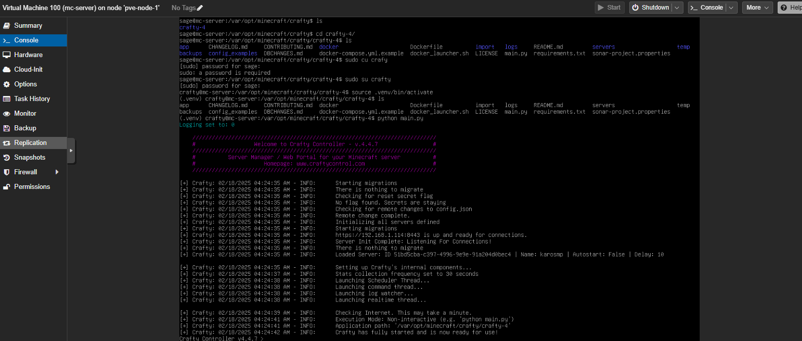
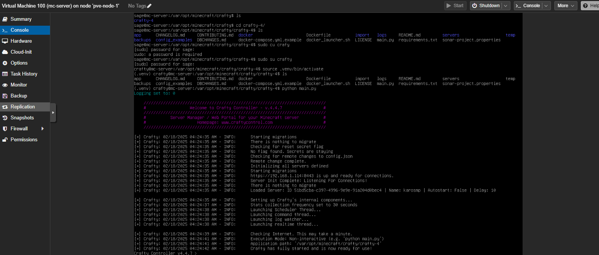

Overview
I have always been interested in computers for as long as I can remember, and always liked tinkering with old hardware and experimenting with enterprise-style computing; building my first personal PC early in middle school, and a multi-gpu cluster for cryptocurrency mining a little later. More recently however, I have found a passion for networking and self-hosting; it is a good learning experience in emulating how services are delployed in the industry as well as scratches my itch for messing around with computer hardware. It also allows me to offload computational tasks to the server like training ML models, performing large computations with data, or personal projects that need high uptime, such that I can continue using my personal computer in the meantime.
To organize my recent experiments, I have picked up another skill/hobby along the way; 3d-printing and CAD. Originally inspired by this post, it seemed like a neat way to store and access all of my networking hardware in the same location- and to be honest, it just looked really cool to have around my living space. I purchased a solid beginner printer (Bambu Lab a1), and got to work designing a few mounts for my rack components, purchased a few server rails online, and have been slowly adding to the rack.
I currently have a two compute node cluster running Proxmox Virtual Environment, which has VMs for PiHole, hosting 1 minecraft server for friends, an ubuntu VM for testing trading algorithms, a Windows VM for experimenting with LLMs, as well as a VM hosting this very website (once I get a workaround for getting past my upstream router)! I reused an old Linksys router I had laying around, and a Netgear GS308EP managed switch to manage my LAN.
Features
- 1x HP EliteDesk 800 G3 Mini (Intel i7-6700T, 24Gb RAM, 512Gb SSD) in a proxmox cluster.
- 1x HP EliteDesk 800 G6 Mini (Intel i7-10700T, Nvidia 1660Ti, 32 Gb RAM, 512Gb SSD) in a proxmox cluster and LLM experiments
- 1x Old Linksys Router (unsure of model number- soon to be upgraded)
- 1x Netgear GS308EP 8 port managed POE+ switch
- Various 3d-printed components like patch panel, SSD enclosures.
Technologies / Keywords
Networking, Cloud Computing, Hypervisors, Distributed Computing, CAD
Future Work
I hope to find a few good deals on some storage devices so I can work on creating a NAS server; most likely to be run on the proxmox cluster with SSD passthrough. As I am currently living in an apartment complex, I cannot directly host services as network traffic must go through the upstream router in the apartment before reaching me. I am looking into setting up a reverse SSH tunnel at some remote location in order to tunnel traffic into my LAN and allow me to host websites and services for the public. With a third compute node added to the Proxmox cluster, I could also experiment with maintaining high uptime in my VMs- if one certain compute node goes offline for some reason, the VM can be transferred to another with a short delay, continuing functionality.